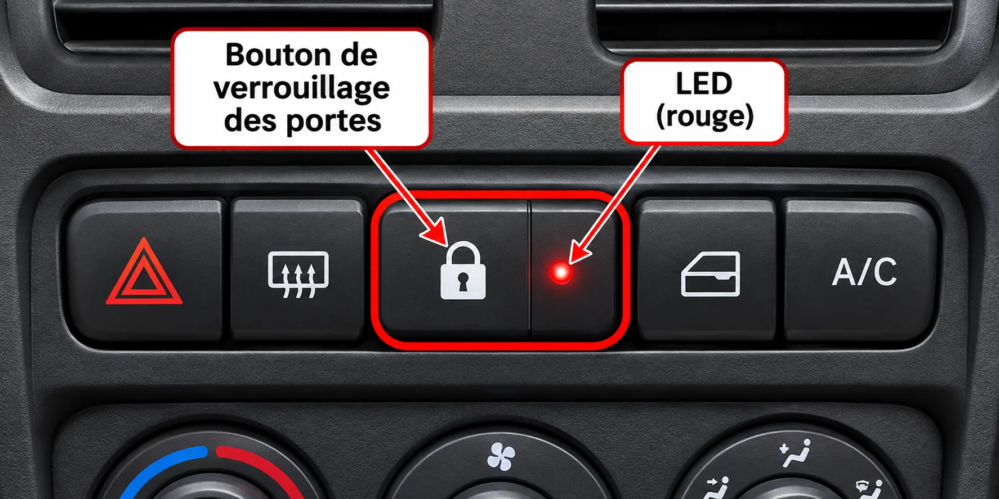

Mission
Vous devez vérifier le fonctionnement du témoin rouge de verrouillage des portes. Exploitez les courbes de la LED, simulez le circuit, puis réalisez les mesures sur le poste électronique.
Votre fiche papier est le seul livrable. Inscrivez-y vos résultats et remettez-la au professeur. Le site ne corrige et n'enregistre aucune réponse.

Cahier des charges
I. Vérification théorique
Questions 0 à 3 de la fiche papier. Pour les six intensités lumineuses relatives, lisez le courant sur la première courbe, puis la tension sur la seconde. Reportez les points sur votre fiche.
Un clic ou un toucher place des lignes de lecture. Les flèches du clavier permettent d'ajuster leur position. Aucun résultat n'est validé.
Version de développement : les tracés vectoriels sont reconstitués à partir des courbes de la fiche d'origine. Ils devront être comparés et étalonnés avec les documents avant une utilisation notée.
II. Simulation électronique
Questions 4 à 6. Réglez le potentiomètre, observez les appareils de mesure et inscrivez vos résultats sur la fiche papier. Aucun indicateur de bonne réponse n'est affiché.
Les instruments affichent les valeurs calculées pour le réglage choisi. Ils ne corrigent pas le travail.
III. Travail sur poste électronique
Questions 7 à 11 de la fiche papier.
- Testez la LED en position « diode » du multimètre et repérez anode et cathode.
- Alimentation coupée, réglez le potentiomètre avec l'ohmmètre.
- Réalisez le montage sur la plaque d'essais, alimentation coupée.
- Mesurez la tension de la LED en dérivation et son courant en série.
- Faites vérifier le montage par le professeur et rendez la fiche papier.
Sécurité : ne mesurez jamais une résistance lorsque le circuit est sous tension. Coupez l'alimentation avant de modifier les branchements.
Télécharger la fiche de test
Deux versions de la même fiche sont proposées. Choisissez celle qui correspond à votre matériel. Le professeur récupère votre fiche à la fin du TP.
Enregistrez votre fichier rempli avant de le fermer. Les possibilités d'annotation et de conservation des réponses dépendent du lecteur PDF utilisé.